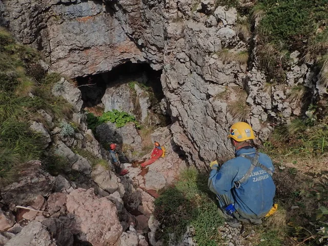

Šestorka u Bunjevcu (Bunovcu)
Kroz listopad i rujan speleološki odsjek je napravio nekoliko posjeta ponoru Bunovac, najdubljoj jami NP Paklenica, sa ciljem monitoringa i 3D snimanja.

Piše: Marko Rakovac Fotkao: Dalibor Paar
Kroz listopad i rujan speleološki odsjek je napravio nekoliko posjeta ponoru Bunovac, najdubljoj jami NP Paklenica. Cilj posjeta bio je monitoring i ponovno 3D snimanje objekta. Na nagovor pročelnika, pristajem podmetnuti leđa za projekt i opće kulture radi, posjetiti ovu, za SO PDS Velebit, značajnu jamu. Polazak smo isplanirali u petak popodne ispred Plodina kod Arene, super mjesto za kupiti hranu za izlet i popiti kavu. Također, izvrsno je mjesto nalaženja jer se može parkirati osobni auto preko vikenda (ne plaća se parking) te se ujedno izbjegava skupljanje po gradu, kad sami izlazak iz grada može potrajati više od sat vremena.
Nas šestero krećemo nešto prije sedam navečer. Plan je da postavimo jamu do dna (sifon na 534 m dubine) te uzmemo mjere za izradu 3D nacrta, što zapravo nije ništa revolucionarno s obzirom da se ista stvar radila sa sličnim alatima prije 10 i više godina. Ono što mi sad imamo je samo veća autonomija akumulatora i led rasvjeta.
Dolazimo na Bunovac oko 23h, te teškom mukom palimo vatru sa vlažnim šibljem i granama. Skupili bi još (suhog šiblja) ali strah nas je od mina, ograničeni smo u kretanju. Malo nam je hladno, ali nezagađeno nebo i mjesečina što obasjavaju vrhove Malovan i Segestin, čine bunovačku zaravan pravim mjestom za ovu malu grupu speleo entuzijasta.
U subotu ujutro se ležerno ustajemo, znajući da imamo cjelodnevnu akciju pred sobom. Trebamo se spustiti na dno i u istom šusu raspremiti jamu. Dok se pripremamo, nekolicina planinara prolazi prema Vaganskom vrhu. Nudimo ih kavom ali oni ne gube vrijeme. Kad smo posložili ekipe, lagano krećemo. Srki i Luka postavljaju, Ana i ja crtamo dok će za nama Dalibor i Ela skupljati uzorke.
[caption id="attachment_2015" align="alignnone" width="675"] Na ulazu u Bunovac, (foto: Marko Rakovac)[/caption]Spuštamo se do točke na 220 metara dubine gdje su prošli put stali Marijan i Španja. Tražimo točku x51 međutim ne nalazimo je. Crtamo od police i krećemo prema dolje. Zapravo, bili smo jako učinkoviti i brzi, te smo 200m dubine nacrtali za cca sat i po vremena, pritom se učeći crtati u aplikaciji Topodroid. Nije to ništa komplicirano i tehnologija bitno olakšava napredovanje. Mali nedostatak aplikacije je umjetnički izražaj, jer su svi topografski simboli standardizirani.
[caption id="attachment_2016" align="alignleft" width="344"] Zastajkivanje radi FB dokumentacije, (Marko Rakovac)[/caption]Na 300 metara dubine sustižemo Srki i Lukicu, koji su bili nešto sporiji zbog postavljanja. Ana i ja smo napravili pauzu od sat i pol vremena, okrijepili se i onda krenuli prema dnu. Pred samo dno se svi šestoro nalazimo i čekamo da Luka postavi posljednji skok. Srećom da je uzeo dodatno uže jer u suprotnom ne bi imali do dna.
Oko 23h smo svi na dnu, -534 m. Naslikavamo se i uzimamo mjerne podatke. Sifon je zapunjen šibljem i neatraktivnom pjenicom, pitamo se koji bi to speleoronilac zaronio u ovo nepregledno jezero. Nakon okrijepe, sabiremo transportne i krećemo sa raspremanjem. Oko 6 sati ujutro dolazimo na 220 m dubine, mokri i promrzli. Putem smo ustanovili nekoliko upitnika od kojih nam je onaj na -250 m najviše zapeo za oko. Dio transportnih smo do 100 m dubine izvukli tehnikom protuutega a kasnije smo nas troje (Luka, Ana i ja) izvukli 8 vreća tehničke opreme! Putem skupljamo Srki i oko 12 sati smo vani, izbijeni i neispavani, ali spokojni jer smo udarnički zaokružili jednu cjelinu u jami. [caption id="attachment_2017" align="alignnone" width="675"] Postavljanje (Marko Rakovac)[/caption]Sabiremo se svi u logoru, dijelimo iskustva i nakon kraćeg odmora krećemo za Zagreb. Stajemo na kavu u Brinju te predvečer smo već u svojim domovima, što nam daje dovoljno vremena saberemo misli, operemo opremu i oplemenimo vikend!
[caption id="attachment_2018" align="alignleft" width="360"] Bunovac u digitalnom prikazu[/caption] Sudionici izleta: Ana Lipovec - Bobica, Ela Kovač - Elica, Luka Havliček – Lukica, Marko Rakovac – Raki, Dalibor Paar – Dališa i Srđana Rožić – Srki.